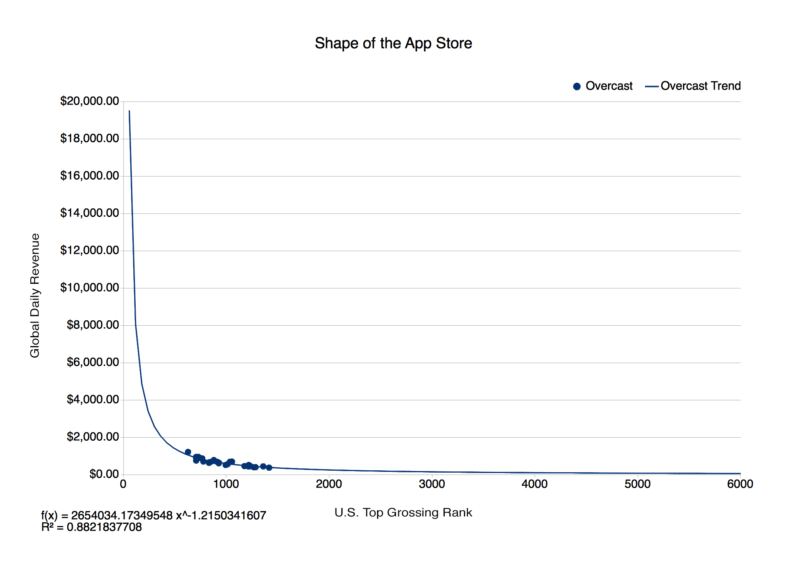
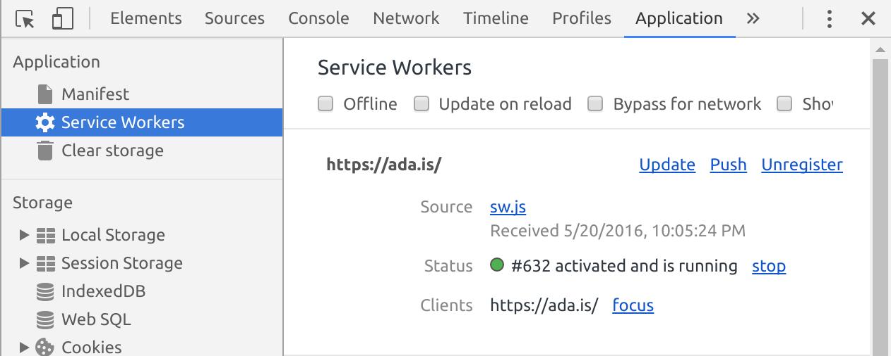

The common wisdom for most companies when they go to build an app is to build a native Android or iOS app as well as building a supporting website. Although there are some good reasons for that, not enough people know about the major advantages that a web app has. The web app can replace all of these functions in one. They are coming more and more to the forefront nowadays, but still not enough people are familiar with them and adopting them for use. Here you will be able to find some ‘do’s and dont’s’ on how to make a progressive web app as well as resources for further research. I’ll also go into the various components and support issues surrounding the web app. Although not every browser is friendly to them, there are still some compelling reasons to learn more about this technology.
What makes a web app progressive? A ‘Progressive Web App’ is an umbrella term for certain technologies that go together to produce an app-like experience on the web. For simplicity’s sake I’ll be referring to them as simply web apps from now on.
An ideal web app is a web page which should have the best aspects of both the web and of a native app. It should be fast and quick to interact with, fit the device’s viewport, remain usable offline, and support an icon on the home screen.
In the same breath, it must not sacrifice the things which make the web great, such as the ability to deeply link into the app and use urls to enable sharing of content. Like the web, it should work well across platforms and not focus solely on mobile. It should behave just as well on a Desktop computer as on other form factors, lest we risk having another era of unresponsive m.example.com websites.
Progressive Web Apps are not new. Mobile browsers have had the ability to bookmark a website to your phone’s home screen since 2011 (2013 on Chrome Android) with meta tags in the head determining the appearance of the installed web page.The Financial Times has been using a Web App for digital content delivery on mobile devices since 2012. (https://app.ft.com)
Moving to a Web App enabled the FT to use the same app to ship across platforms using a single distribution channel. Back when I was working for the FT, with a single build we were able to support:
iOS
Android (4.4+) Chrome
Older Android (via wrapper)
Windows 8
Blackberry
Firefox OS
That truly achieves ‘build once, deploy anywhere.’
There are some good reasons why it is still standard practice for most major companies to have a native app that is supplemented by a website. Among these are concerns about browser support and the fact that most users are acclimated to using native apps. I will address these issues in more detail later. Not least of these concerns is how the app will get exposure if it is not in the app store.

Source: http://dazeend.org/2015/01/the-shape-of-the-app-store/
I would argue that there is not a major advantage to being in the app store since it has been shown that if you are not in the top 0.1% of apps in the app store you are not getting significant benefit from the app store.
User’s tend to find your apps by first finding your web site. If your website is a web app then they are already at their goal.
One of the strengths of web apps is that they allow you to improve engagement by reducing the number of clicks required to re-engage the user between landing on your website and engaging with your app.
By having the user ‘install’ your web app by adding it to their homescreen, they can continue engaging with your site. When they close down the web browser, the phone will show them where the web app is installed, bringing you back to the forefront of their mind.
Modern web apps are based around a new technology called Service Workers. Service Workers are a programmable proxy which sit between the user’s tab and the wider internet. They can intercept and rewrite or fabricate network requests to allow very granular caching and offline support.
Since the origins of the web app in 2011, which enabled bookmarking websites to the home screen, a number of developments have taken place to lay more groundwork for the creation of Progressive Web Apps.
Chrome 38 introduced the web app manifest, which is a JSON file that describes the installed app configuration of your web app. This allows us to remove the configuration from the <head>.
In Chrome 40 (December 2014), service workers started to be rolled out across Firefox and Chrome. Safari has so far chosen to not implement this feature as of the time of writing, but have it ‘under consideration’. The service worker’s function is to simplify the process of bringing the app offline; it also laid the foundation for future app-like features, such as push notifications and background sync.
Apps that were built based on the new service workers and the web app manifest became known as a Progressive Web Apps.
A Progressive Web App is not the same as a spec. In fact, it started out as a definition of what a web app should be in the era of service workers, given the new technology being built into browsers. Specifically, Chrome uses this definition to trigger an install prompt in the browser when a number of these conditions are fulfilled. The conditions are that the web app:
has a service worker (requires https)
has a web app manifest (with at least minimal configuration and is display: “standalone”)
has had two distinct visits.
In this case ‘progressive’ means that the more features the browser supports, the more app-like the experience can become.
The prompt to install the web app is currently shown under varying conditions across Opera, Chrome and the Samsung browser.
IOS has indicated interest in progressive web apps but at the time of writing still relies on meta tags for web app configuration and appcache for offline use.
Here we will go into some more detail about the characteristics of a web app.
A progressive web app should exhibit certain app-like properties…
Perfectly filling the screen, these sites are primarily aimed at mobile and tablets and will need to respond to the plethora of screen sizes. They should also just work as desktop websites.
Responsive design has been a major part of web site building for many years now smashing mag has some great articles on it here: https://www.smashingmagazine.com/responsive-web-design-guidelines-tutorials/
The app must be capable of starting offline and still display useful information.
The interface is designed for touch with gesture interaction. User interaction must feel responsive and snappy with no delays between a touch and a reaction.
The app provides metadata to tell the browser how it should look when installed so you get a nice high resolution icon on the homescreen and a splash screen on some platforms.
Push Notifications (only if required) -
The app has the ability to receive notifications when the app is not running.
The app’s ability to be installed is a progressive enhancement. It is vital that it still works as a normal website, especially on platforms which may not support installing or service workers yet.
It is not locked into any browser or app store. It should be able to be deep linked to and should provide methods of sharing the current url.
Taking your website offline gives some major advantages.
First off, it still works when the user is on a flaky network connection.
In addition, the time from opening the app to using the app is greatly reduced if it is not reliant on the network. This provides the user with a great experience. A carefully optimised web app can start faster than a native one if the browser has been used recently.
There are two methods of getting a site to work offline:
Old and busted - Support for starting your website offline has been around for years in the form of AppCache. AppCache has some serious flaws though, and has even been deprecated from spec. It is difficult to work with and can risk permanently breaking your websites if misconfigured. Still, it is the only way to do offline on iOS, at least until Apple make a move to support Service Workers.
New Hotness - Also effective are service workers, which are currently supported in Chrome, Firefox, Opera and coming very soon to Edge. Apple’s Webkit team has it marked ‘Under consideration’.
Service workers are like other web workers in that they run in a separate thread, but they are not ties to any tab specifically they are assigned a url scope when they are created. They can intercept and rewrite any requests in this scope. If your service worker sits in http://example.com/my-site/sw.js it can intercept any requests made to /my-site/ or lower but cannot be made to intercept requests to the root http://example.com/
Because they are not tied to any tab, they can be brought to life in the background to handle push notifications or background sync. Not least, it is impossible to permanently break your website with them since they will automatically update when a new service worker script is detected.
A good guideline is that if you are building a new website from scratch, start off with a service worker. However, if your website already works offline with AppCache, then you can use the tool sw-appcache-behavior to generate a service worker from this, as we may soon be in a state where some browsers will only accept service workers and some will only accept app cache.
Because AppCache is being deprecated I will not discuss it further in this article.
Also see: Setting up a service worker for more detailed instructions.
Since a service worker is a special type of Shared WebWorker, it runs in a separate thread to your main page. This means that it is shared by all web pages in the same path as the service worker. E.g. A service worker located at /my-page/sw.js will be able to effect /my-page/index.html and my-page/images/header.jpg but not /index.html
Service workers are able to intercept and rewrite or spoof all network requests made on the page including those made to data:// urls!!
This power allows it to provide cached responses to get pages to work when there is no data connection; however, it is flexible enough to allow for many possible use cases.
It is only allowed in secure contexts (i.e. https) because it is so powerful. This prevents third parties from permanently overriding your site using an injected service worker from an infected or malicious wifi access point.
Setting up https nowadays may seem daunting and expensive, but actually it has never been easier or cheaper. Let’s Encrypt provides free SSL certificates and scripts to automatically configure your server. If you host on github, github pages are automatically served over https. Tumblr pages can be configured to run on https, too. Cloudflare can also proxy requests to upgrade to https.
Offlining usually involves picking certain caching methods for different parts of your site to allow them to be served faster or when there is no internet connection. I will discuss various caching methods below.
I use the tool sw-toolbox to abstract away complex caching logic. This library can be set to handle the routing by providing four preconfigured routes, which can be configured in a clean fashion. It can be imported into your service worker
Precaching pulls down requests before your site works out they are needed. This can greatly increase first paint time because your site doesn’t need to parse ‘/site.css’ before it starts downloading your websites logo ‘/images/logo.png’.
toolbox.precache([’/index.html’, ‘/site.css’, ‘/images/logo.png’]);
Allowing users to revisit your site when the user is offline in the simplest case means falling back to the cache if the device is offline. It is important to set a timeout here because a flaky network, a misconfigured router or a captive portal could have the user waiting indefinitely.
toolbox.router.default = toolbox.networkFirst; toolbox.options.networkTimeoutSeconds = 5;
In reality we can actually be a little smarter because the majority of your assets will not change over time. We probably want to just get the content as soon as possible, whether from cache or network. The following line tells sw-toolbox that all requests to the images path should come from cache if they are available.
toolbox.router.all(’/images/*’, toolbox.fastest);
In the case when the user is authenticating it is important we are not just returning a cached response we will state that requests made to /auth/ should be network only.
toolbox.router.post(’/auth/*’, toolbox.networkOnly);
Here are some examples of good practises for offlining:
Initial static assets are precached, this downloads them and caches them when the Service Worker is installed. This means that they do not need to be loaded from the server when they are eventually required.
By default requests will try to be freshly sourced from the network but will fall back to the cache so they are available offline.
A relatively short network timeout means that requests will be able to return cached data on a network connection which says it has a data connection but no responses are being returned.
Infrequently updated assets such as images will be dispatched from cache first then and the browser will also try to update them. If ‘toolbox.cacheOnly’ was used then it could also save the user’s data.
**NB! **The browser cache and the Cache API are different animals. The Cache API has been bypassed in the case of network first or network only. The request may still hit the browser cache because the caching headers on the request say it is still valid. Problems with this may result in user receiving a mixture of cached and fresh data. Jake Archibald has some good suggestions for avoiding this issue here: https://jakearchibald.com/2016/caching-best-practices/
If you are in Chrome or Opera go to: chrome://serviceworker-internals. This will allow you to inspect and pause and uninstall your service worker script.
In recent versions of Chrome or Opera you can get detailed views and debugging tools through the application tab in the inspector

Users of the web have come to expect that the web does not have smoothly animated interfaces the way native apps do. However, the same standard is not acceptable for web apps. Web apps must animate smoothly lest our users feel we are delivering a degraded, second class experience. We have three goals in order to make it ‘feel’ fast:
When the user does something the app must also do something within 100ms, otherwise the user will notice a lag. This counts for taps, clicks, drags and scrolls.
Each frame must render at a consistent 60fps (16ms per frame), having even only a few slow frames is very noticeable.
It must be fast on a three year old budget phone running on a poor network as well as well as your shiny development machine.
It must start fast: Long has the web been focused on maintaining user engagement by getting a visible and usable site in under 1-2s. When it comes to web apps, start up time is as important as ever. If all of the app content is cached and the browser is still in the device’s memory, a webapp can start faster than a native app. One mistake made by native and web alike is requiring networked content to work.
The web app must be small to download and update - 10MB from an app store don’t feel like much, but 10 uncached MB downloaded every time is very much impossible to reach for a lot of mobile users
Off the bat, the most essential item is this in the head of the document:
<meta name=“viewport” content=“width=device-width”>
This line will ensure that there is no 300ms tap delay on phone browsers which are Chromium based and Firefox browsers, but still allows the user to zoom in by pinching (great for accessibility.)
Since iOS 8 came out, clicks are fast by default but may seem slow if the tap was fast, according to certain heuristics. If this is an issue for you I recommend using FastClick to remove the delay.
There is also the issue of animation performance. You probably want to have lots of pretty animating in and out of elements as well as elements which can be dragged by the user or other lovely interactions.
Web performance is something which can be discussed in great detail and is a subject close to my heart, I won’t go into too much detail but I will touch on what I do to ensure that my interactions and animations are crisp and smooth.
Dig around or ask around your friends or family for an old smartphone; I usually borrow my partner’s Nexus 4.
Plug the phone into your computer and go to chrome://inspect/#devices. This will open an inspection window you can use to inspect the web pages running on the phone. You can use profiling and view the timeline to find sources of poor performance and optimise them based on a real baseline device.
Animating certain css properties is one of the biggest cause of not smooth animations, known as jank. CSS Triggers is a great resource for determining what properties can be safely animated without causing the browser to repaint or re-layout the whole page.
If writing performant animations is a daunting task, there are very many libraries out there which handle high performance animations for you. A favourite of mine is Greensock, which can handle touch interactions such as dragging items very nicely as well as doing very fancy animations and tweening.
Push notifications are a great way to re-engage with your users. By prompting the user you bring your app to the forefront of their mind. They can finish off an unfinished transaction or receive alerts about relevant new content.
When creating push notifications, make them relevant to the user only for events happening at that moment, don’t waste their time on things which can be done later. Ensure that the what you are notifying for require user action. E.g. Reply to person, go to event. Also don’t make a push notification if your web app is already visible or focused.
Make sure that when interacted with your notification goes to a page which works offline. Notifications will hang around unread. They may be interacted with when the user has no network connection. It will anger your user if your push notifications refuse to work after the user has tried to interact with it.
The very best experience for push notifications allows the user to not open your web app at all!
Therefore, enable the user to NOT open the web app. ‘You have a new message’ is useless. It is as annoying as a clickbait headline. Display the message and the sender.
Action buttons on the notification allow you to provide interaction prompts which may not open the browser. E.g. ‘like this post’, ‘reply with yes’, ‘reply with no’, ‘remind me later’. These will provide a positive engagement experience on the user’s terms to keep them engaged with minimal time investment on their part.
If you spam the user with regular or irrelevant notifications, they may disable notifications for your app in the browser. After that it is impossible to re-engage and you can’t easily prompt for permission again!
To avoid this, have a clear and easy route to get to your app’s ‘disable notification’ button. Once you have addressed the issues frustrating your users you can then try to re-engage.
The Push Notification API requires a service worker. As it is possible to receive push notifications when no browser tabs are open, the service worker will handle the notification request in a background thread. It can perform async operations such as making a fetch requests to your API before displaying the notification to the user.
To make a push notification, make a request to an endpoint provided by the browser manufacturer. For Chromium based browsers (Opera, Samsung and Chrome) it is “Firebase Cloud Messaging”. These browsers also behave a little off-spec as well.
One can reveal the details of this by requesting push notification permission.
serviceWorkerRegistration
.pushManager
.subscribe({
// Required parameter as receiving updates
// but not displaying a message is not supported everywhere.
userVisibleOnly: true
})
.then(function(subscription) {
return sendSubscriptionToServer(subscription);
})
The subscription is an object that looks like:
{
“endpoint”: "http://example.com/some/uuid"
}
In the example above, the uuid uniquely identifies the browser you are currently using.
NB: Chromium based browsers behave a little differently. You need a Firebase app ID, and this needs to be entered into your Web App Manifest e.g. “gcm_sender_id”: “90157766285”
Also, the endpoint does not work in the format it is given. Your server needs to mangle it slightly to get it to work. It needs to be a POST request with your api key in the head and the uuid in the body. The details are here: https://developers.google.com/web/fundamentals/getting-started/push-notifications/step-07?hl=en
When sending push notifications it is possible to send data in the body of the push notification itself. This is very complex and involves encrypting the content into the api request. The ‘web-push’ package for node can handle this, but it is not what I prefer to do.
It is possible to perform async requests once the notification has been received, so I prefer to send a minimal notification, known as a ‘tickle’, to the client and then the service worker will make a fetch request to my API to pull down any recent updates.
NB: The service worker can be closed by the browser at any point. The event.waitUntil function in the push event will tell the service worker to not close until the event is finished.
self.addEventListener(‘push’, function(event) {
event.waitUntil(
// Makes api request, returns Promise
getMessageDetails()
.then(function (details) {
self.registration.showNotification( details.title, {
body: details.message,
icon: '/my-app-logo-192x192.png'
})
})
);
});
You can listen for a click/press interaction on the notification events too. Use these to decide how to react. You can open new browser tabs, focus an existing tab or make api requests. You also choose whether to close the notification or keep it open. Use this functionality with actions on the notification to build great functionality into the notification itself. This will be a great experience, rather than requiring the user to have to open your app each time.
My final and most important point is that, in our rush for an app like experience we should not forget to stay web-like in a very important aspect: URLs.
An installed web app often will chose to hide the browser shell. There will be no address bar for the user to share their current url and they can’t save the current page for later.
Having URLs is a unique web advantage: you can get users to use your app via clicking rather than describing how to navigate an app. All the same, it is very easy to forget to expose this to the users. You could write the best app in the world, but if no one can share it you have done yourself a major disservice.
What it comes down to is make sure you provide ways to share your app either via share buttons or a button to expose the url.
Checkout 'Is ServiceWorker ready?' for the current status on service worker support across browsers.
You may have noticed throughout all of this I mention Chrome, Firefox and Edge but left out Safari. Safari has introduced web apps to the world and has shown interest in progressive web apps, but still does not support Service Workers or the Web App manifest. What can you do in this situation?
It is possible to make an offline site for Safari with AppCache, but doing so is both difficult and fraught with weird edge cases which can break pages or keep them permanently out of date after first load.
What I do suggest instead is to build a great web app experience and all the work to make the app experience great will still be great on safari as it is still a very good browser. When Service Workers do come to Safari you will be ready to take advantage of them.
Finally, we can look forward to a lot of exciting developments in the world of web apps, with increasing support for the technologies behind them and new features coming to web platform such as Web Bluetooth for interacting with hardware, WebVR for virtual reality and WebGL 2 for high speed gaming. Now is a great time to be exploring the possibilities web apps have to offer and take part in shaping the future of what the web will look like.
Other writings on PWA: https://ada.is/blog/2016/06/01/yet-another-progressive-webapp-post/ Links referenced in the article:
Ada is a Developer Advocate for Samsung and was previously a member of FT Labs.